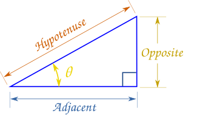
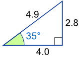
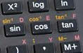
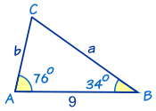

Introduction to Trigonometry
Trigonometry: from Greek trigonon "triangle" + metron "measure"
Want to learn Trigonometry? Here is a quick summary.
Follow the links for more, or go to Trigonometry Index
 |
Trigonometry ... is all about triangles. |
Trigonometry helps us find angles and distances, is used a lot in science, engineering, video games, and more!
Right-Angled Triangle
The triangle of most interest is the right-angled triangle. The right angle is shown by the little box in the corner:

Another angle is often labeled θ, and the three sides are then called:
- Adjacent: adjacent (next to) the angle θ
- Opposite: opposite the angle θ
- and the longest side is the Hypotenuse
Why a Right-Angled Triangle?
Why is this triangle so important?
Imagine we can measure along and up but want to know the direct distance and angle:

Trigonometry can find that missing angle and distance.
Or maybe we have a distance and angle and need to "plot the dot" along and up:

Questions like these are common in engineering, computer animation and more.
And trigonometry gives the answers!
Sine, Cosine and Tangent
The main functions in trigonometry are Sine, Cosine and Tangent
They are simply one side of a right-angled triangle divided by another.
For any angle "θ":

(Sine, Cosine and Tangent are often abbreviated to sin, cos and tan.)
Example: What is the sine of 35°?

Using this triangle (lengths are only to one decimal place):
sin(35°) = OppositeHypotenuse = 2.84.9 = 0.57...
The triangle could be larger, smaller or turned around, but that angle will always have that ratio.
Calculators have sin, cos and tan to help us, so let's see how to use them:

Example: How Tall is The Tree?
We can't reach the top of the tree, so we walk away and measure an angle (using a protractor) and distance (using a laser):
- We know the Hypotenuse
- And we want to know the Opposite
Sine is the ratio of Opposite / Hypotenuse:
sin(45°) = Opposite Hypotenuse

Get a calculator, type in "45", then the "sin" key:
sin(45°) = 0.7071...
What does the 0.7071... mean? It is the ratio of the side lengths, so the Opposite is about 0.7071 times as long as the Hypotenuse.
We can now put 0.7071... in place of sin(45°):
0.7071... = Opposite Hypotenuse
And we also know the hypotenuse is 20:
0.7071... = Opposite 20
To solve, first multiply both sides by 20:
20 × 0.7071... = Opposite
Finally:
Opposite = 14.14m (to 2 decimals)
Example: How Tall is The Tree?
(to 2 decimals)
The tree is 14.14m tall
Try Sin Cos and Tan
Play with this for a while (move the mouse around) and get familiar with values of sine, cosine and tangent for different angles, such as 0°, 30°, 45°, 60° and 90°.
Also try 120°, 135°, 180°, 240°, 270° etc, and notice that positions can be positive or negative by the rules of Cartesian coordinates, so the sine, cosine and tangent change between positive and negative also.
So trigonometry is also about circles!

Unit Circle
What you just played with is the Unit Circle.
It is a circle with a radius of 1 with its center at 0.
Because the radius is 1, we can directly measure sine, cosine and tangent.
Here we see the sine function being made by the unit circle:
Note: you can see the nice graphs made by sine, cosine and tangent.
Degrees and Radians
Angles can be in Degrees or Radians. Here are some examples:
| Angle | Degrees | Radians |
|---|---|---|
Right Angle  |
90° | π/2 |
| Straight Angle __ | 180° | π |
Full Rotation  |
360° | 2π |
Repeating Pattern
Because the angle is rotating around and around the circle the Sine, Cosine and Tangent functions repeat once every full rotation (see Amplitude, Period, Phase Shift and Frequency).

When we want to calculate the function for an angle larger than a full rotation of 360° (2π radians) we subtract as many full rotations as needed to bring it back below 360° (2π radians):
Example: what is the cosine of 370°?
370° is greater than 360° so let us subtract 360°
370° − 360° = 10°
cos(370°) = cos(10°) = 0.985 (to 3 decimal places)
And when the angle is less than zero, just add full rotations.
Example: what is the sine of −3 radians?
−3 is less than 0 so let us add 2π radians
−3 + 2π = −3 + 6.283... = 3.283... radians
sin(−3) = sin(3.283...) = −0.141 (to 3 decimal places)
Solving Triangles
Trigonometry is also useful for general triangles, not just right-angled ones .
It helps us in Solving Triangles. "Solving" means finding missing sides and angles.
Example: Find the Missing Angle "C"

Angle C can be found using angles of a triangle add to 180°:
So C = 180° − 76° − 34° = 70°
We can also find missing side lengths. The general rule is:
When we know any 3 of the sides or angles we can find the other 3
(except for the three angles case)
See Solving Triangles for more details.
Other Functions (Cotangent, Secant, Cosecant)
Similar to Sine, Cosine and Tangent, there are three other trigonometric functions which are made by dividing one side by another:
|
Cosecant Function: |
csc(θ) = Hypotenuse / Opposite |
|
Secant Function: |
sec(θ) = Hypotenuse / Adjacent |
|
Cotangent Function: |
cot(θ) = Adjacent / Opposite |
Trigonometric and Triangle Identities
And as you get better at Trigonometry you can learn these:
 |
The Trigonometric Identities are equations that are true for all right-angled triangles. |
|
The Triangle Identities are equations that are true for all triangles (they don't have to have a right angle). |
Enjoy becoming a triangle (and circle) expert!